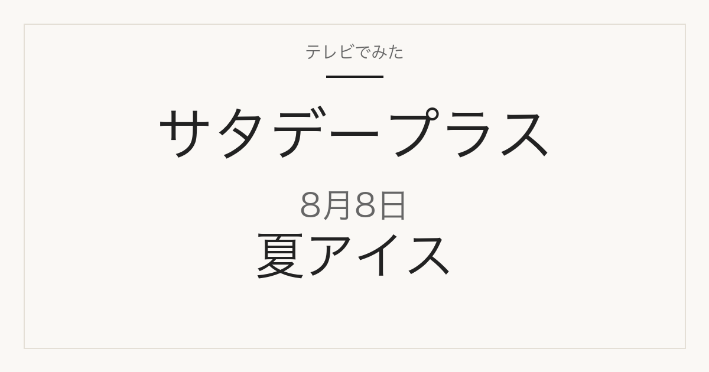

1位／番組掲載価格 183円
ファミリーマート
サクレ 梨
ファミリーマートの店舗で販売された商品です。取り扱いは店舗と時期によって変わります。
テレビ紹介商品の記録メディア
2026年8月8日（土）放送
「ひたすら試してランキング」で調査された5品

2026年8月8日放送のサタデープラス「ひたすら試してランキング」は夏アイス。清水アナウンサーが10時間以上かけて5商品を比較し、ベスト5を選んでいます。番組掲載価格は97円から206円まで幅があります。
この記事には広告・アフィリエイトリンクが含まれます。順位・商品名・番組掲載価格は番組公式情報で確認しています。価格は2026年8月8日時点の番組調べで、現在の販売価格・在庫・取り扱いは変わります。1個あたりの価格は番組掲載価格と商品名の内容量から算出したものです。
味や使い勝手だけでなくコストパフォーマンスが項目に入っているため、上位が最安とは限りません。価格は下の一覧で確認してください。
| 順位 | ブランド | 商品名 | 番組掲載価格 |
|---|---|---|---|
| 1位 | ファミリーマート | サクレ 梨 | 183円 |
| 2位 | 江崎グリコ | パピコ レモン | 206円 |
| 3位 | 赤城乳業 | ガリガリ君 梨 | 97円 |
| 4位 | 森永乳業 | MOW Wジェラート 塩バニラ&メロン | 195円 |
| 5位 | 森永乳業 | PARM ジェラート トロピカルミックス&ヨーグルト味 | 195円 |
1位／番組掲載価格 183円
ファミリーマート
ファミリーマートの店舗で販売された商品です。取り扱いは店舗と時期によって変わります。
2位／番組掲載価格 206円
江崎グリコ
メーカー商品です。スーパーや通販で扱われます。
3位／番組掲載価格 97円
赤城乳業
メーカー商品です。スーパーや通販で扱われます。

(33+1)34本入の箱売りで、番組掲載の1本とは販売単位が違います。冷凍商品です。
4位／番組掲載価格 195円
森永乳業
メーカー商品です。スーパーや通販で扱われます。この回では森永乳業の商品が2品ランクインしています。
5位／番組掲載価格 195円
森永乳業
メーカー商品です。スーパーや通販で扱われます。この回では森永乳業の商品が2品ランクインしています。
このランキングで最も安いのは赤城乳業「ガリガリ君 梨」の97円、最も高いのは江崎グリコ「パピコ レモン」の206円です。番組1位のファミリーマート「サクレ 梨」は183円で、最安の商品とは86円の差があります。
通販では番組と販売単位が違うことがあります。商品名だけでなく内容量と入り数を合わせて確認してください。
2026年8月8日放送の1位は、ファミリーマート「サクレ 梨」です。番組掲載価格は183円でした。
①アイデア力 ②全体の味 ③後味のさっぱり感 ④コストパフォーマンス ⑤外で食べたときの味を清水アナウンサーが調査したランキングです。
コンビニで販売された商品と、スーパーや通販で扱われるメーカー商品が混在しています。放送から時間が経っているため、販売が終了している場合があります。
順位・商品名・番組掲載価格は2026年8月8日現在の番組公式情報によります。